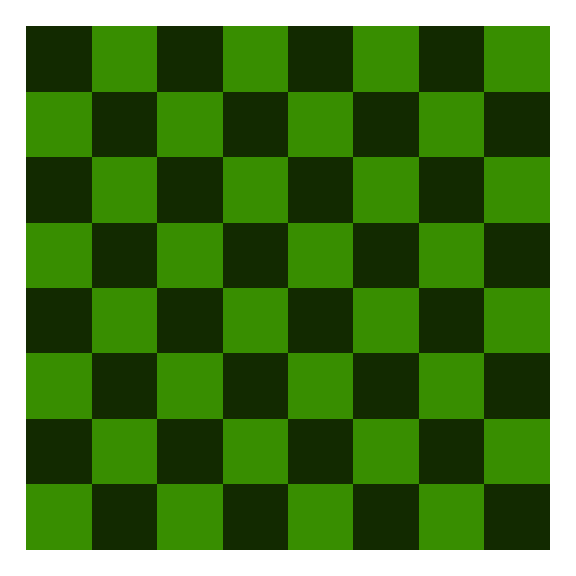
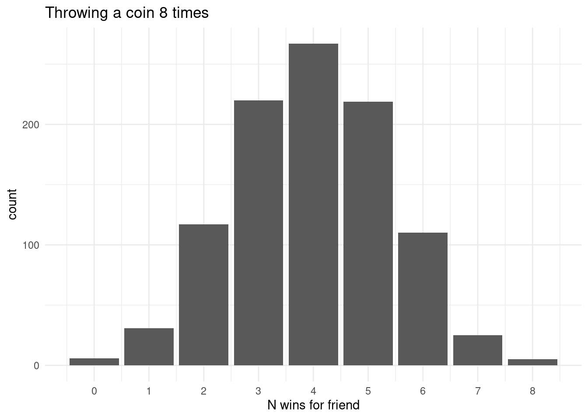
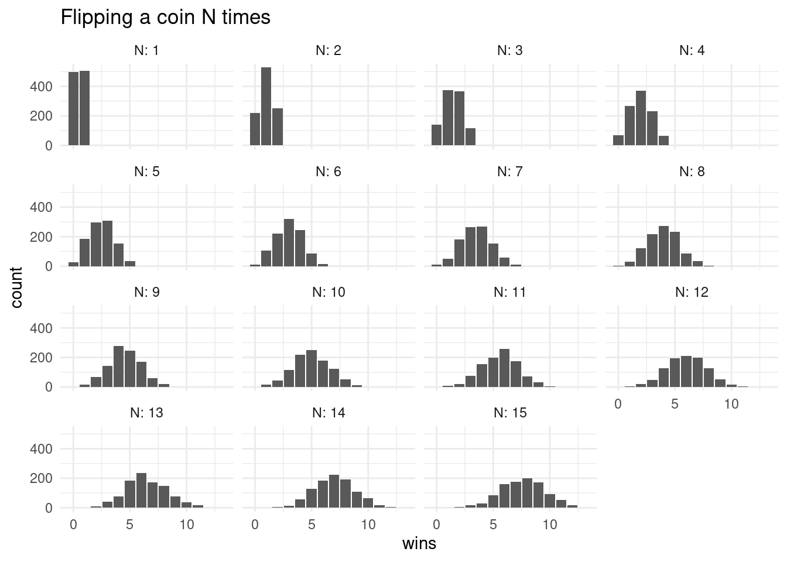
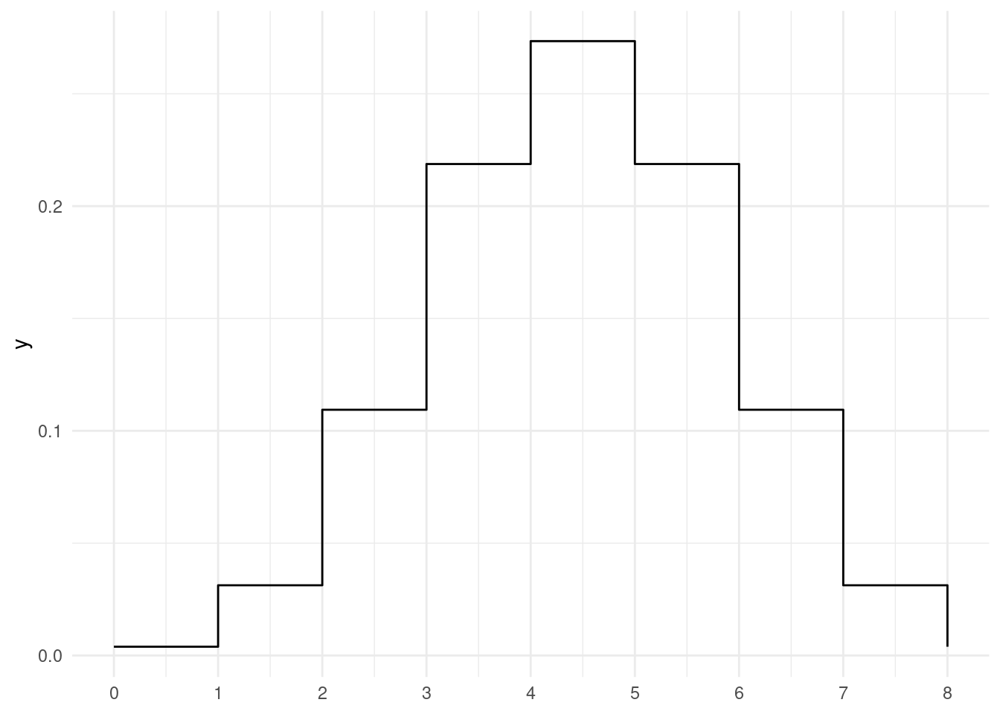
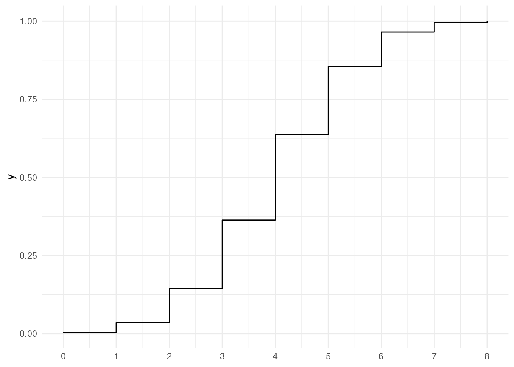
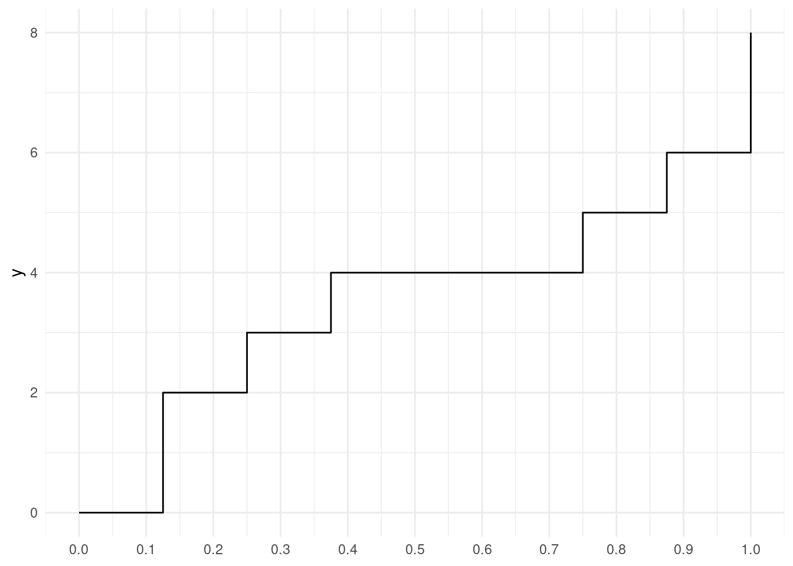
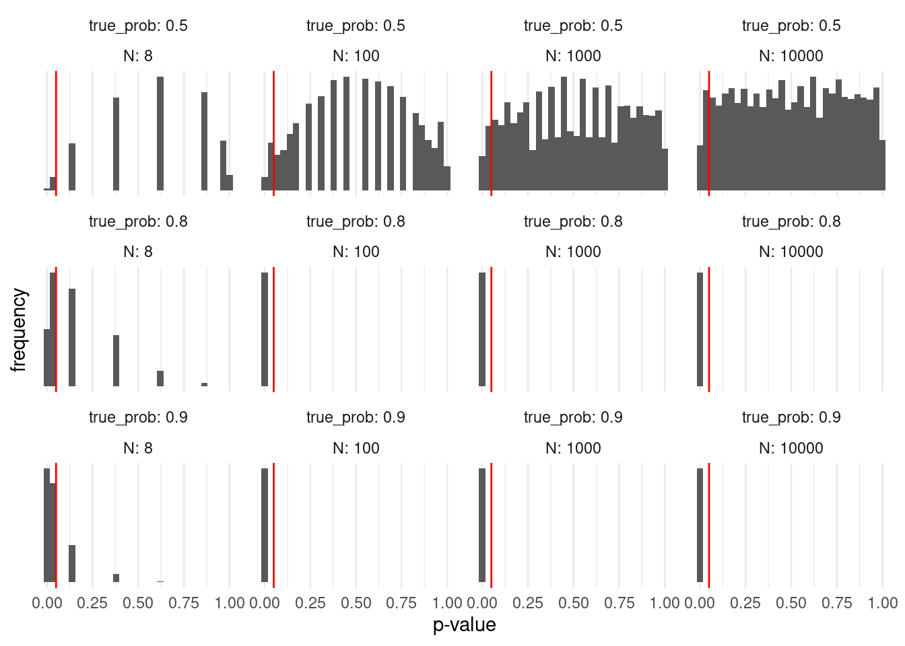
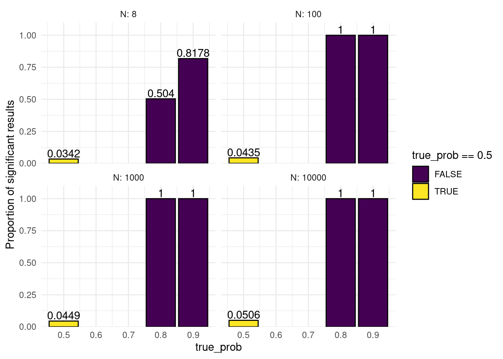
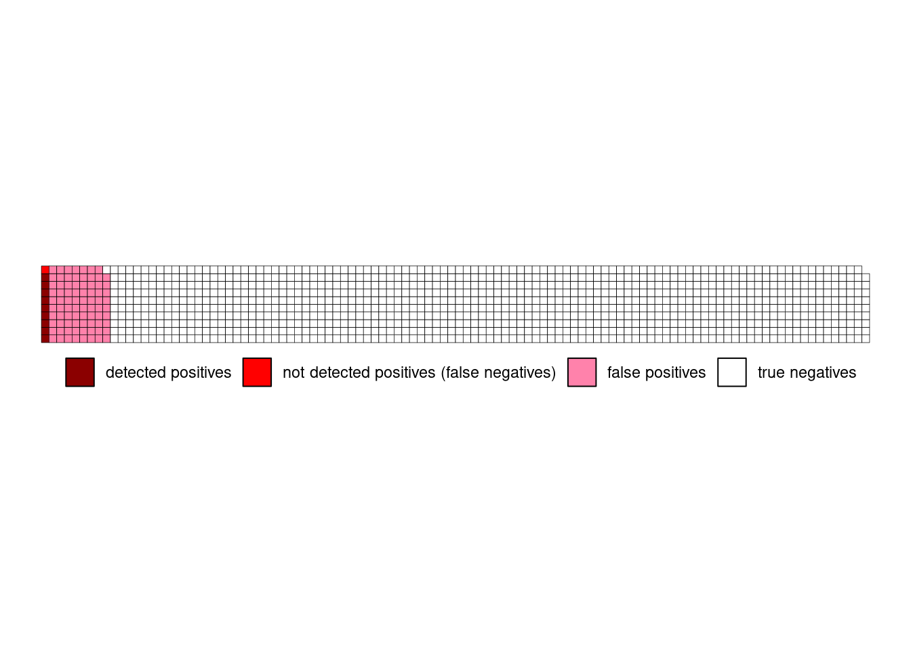

5 Probability and Hypothesis Testing
… in which we reason about the nature of randomness and discover various statistical tests.
5.1 Motivation
In the first four lectures we covered the fundamentals of handling data with R. Now, we will shift our focus away from the how and towards the why of data analysis. We will talk about different statistical tests, common mistakes, how to avoid them and how to spot them in other research. But of course, we will do so using R. So you will still learn one or the other useful function or technique along the way. In most instances it should be clear when I use R solely to demonstrate an idea from statistics and the code is just included for the curious, or whether the code is something you will likely also use for your own analysis. I am open for questions if things are unclear in any of the two cases. For purely aesthetic code I might also speed up the typing in the edit.
For the longer text parts it might be helpful to look at the script while watching the video or pause frequently to take your own notes (Rmarkdown is great for your lecture notes as well!).
5.2 Statistically Significant…
…you keep using that word. I don’t think it means what you think it means.

You will hear the phrases “statistically significant”, “significant” or even “very significant” thrown around quite a bit in academic literature . And while they are often used carelessly, they have a clearly defined meaning. A meaning we will uncover today. This meaning is related to the concept of so called p-values, which have an equally bad reputation for frequently being misused. The p in p-value stands for probability, so in order to understand p-values, we need to understand probability and learn how to deal with randomness, chance, or luck if you will. So…
5.3 Getting our Hands dirty with Probability
To understand statistics means understanding the nature of randomness first.

Say you and you friend are playing a game of chess, when your friend proudly proclaims:
“I am definitely the better player!”.
“Proof it!”, you reply.
“That’s easy”, she says: “I won 7 out of the 8 rounds we played to today.”
“Pah! That’s just luck.” is your less witty and slightly stubborn response.
As expected, we shall be using R to resolve this vital conflict.

5.3.1 Definitions: Hypothesis
Both of you involuntarily uttered an hypothesis, a testable assumption. And we want to test these hypothesis using statistics. The first hypothesis (“I am the better player.”) is what we call the alternative hypothesis (\(H_1\)). The name can be a bit confusing, because most often, this is your actual scientific hypothesis, the thing you are interested in. So, alternative to what? It is alternative to the so called null hypothesis (\(H_0\)), which is the second statement (“This is just luck”). The null hypothesis provides a sort of baseline for all our findings. It usually goes along the lines of “What if our observations are just based on chance alone?”, where “chance” can be any source of random variation in our system.
The tricky part is that there is no way to directly test the alternative Hypothesis, all we can test is the null hypothesis. Because for any null hypothesis we discard, there are always multiple alternative hypothesis that could explain our data. In our example, even if we end up discarding the idea of our friend’s chess success being only down to luck, this does not prove the alternative hypothesis that she is the better player (she could still be cheating for example). Do keep this in mind when we transfer this to a more scientific setting. Just because we show that something is unlikely to have arisen by chance does not mean that your favorite alternative hypothesis is automatically true.
So, after these words of warning, let’s test some null hypothesis!
5.3.2 Testing the Null Hypothesis with a Simulation
We will start off by building a little simulation. Before testing any hypothesis, it is important to have defined \(H_0\) and \(H_1\) properly, which we did in the previous section. But we need to be a little more specific. Winning by chance would entail a completely random process, which we can model with a coin flip. R has the lovely function sample to take any number of things from a vector, with or without replacement after taking each thing:
Not giving it a number of things to draw just shuffles the vector, which is fairly boring in the case of just two tings. We can’t sample 10 things from a vector of only two elements
sample(coin, size = 10)Error in sample.int(length(x), size, replace, prob): cannot take a sample larger than the population when 'replace = FALSE'But we can, if we put the thing back every time:
sample(coin, 10, replace = TRUE) [1] "tails" "heads" "heads" "tails" "tails" "heads" "tails" "tails" "heads"
[10] "heads"So, let’s make this a little more specific to our question:
winner <- c("you", "friend")
random_winners <- sample(winner, size = 8, replace = TRUE)
random_winners[1] "friend" "friend" "you" "you" "friend" "you" "friend" "friend"random_winners == "friend"[1] TRUE TRUE FALSE FALSE TRUE FALSE TRUE TRUE1 + TRUE[1] 21 + FALSE[1] 1sum(random_winners == "friend")[1] 5mean(random_winners == "friend")[1] 0.625If we were to run this script a million times, the resulting proportion of random wins for both of you would be very, very close to 50-50 because we used a fair coin. However, we don’t have the time to play this much Chess and we sure don’t have the money to run a million replicates for each experiment in the lab. But here, in our little simulated world, we have near infinite resources (our simulation is not to computationally costly).
One trick used above: When we calculate e.g. a sum or mean, R automatically converts TRUE to 1 and FALSE to 0.
Let’s create a function that returns a random number of wins your friend would have gotten by pure chance for a number of rounds N.
get_n_win <- function(N) {
winner <- c("you", "friend")
random_winners <- sample(winner, size = N, replace = TRUE)
sum(random_winners == "friend")
}
get_n_win(8)[1] 3This number is different every time, so how does it change?
A histogram is a type of plot that shows how often each value occurs in a vector. Usually, the values are put into bins first, grouping close values together for continuous values, but in this case it makes sense to just have one value per bin because we are dealing with discrete values (e.g. no half-wins). Histograms can either display the raw counts or the frequency e.g. as a percentage. In ggplot, we use geom_bar when we don’t need any binning, just counting occurrences, and geom_histogram when we need to bin continuous values.
tibble(result) %>%
ggplot(aes(x = result)) +
geom_bar() +
labs(x = "N wins for friend",
title = "Throwing a coin 8 times") +
scale_x_continuous(breaks = 0:8)
As expected, the most common number of wins out of 8 is 4 (unless I got really unlucky when compiling this script). Let us see, how this distribution changes for different values of N. First, we set up a grid of numbers (all possible combinations) so that we can run a bunch of simulations:
And then we use our trusty ggplot to visualize all the distributions.
simulation %>%
ggplot(aes(wins)) +
geom_bar() +
facet_wrap(~N, labeller = label_both) +
labs(title = "Flipping a coin N times")
With a fair coin, the most common number of wins should be half of the number of coin flips. Note, how it is still possible to flip a coin 15 times and and not win a single time. It is just very unlikely and the bars are so small that we can’t see them.
Let us go back to the original debate. The first statement: “I am better.” is something that can never be definitively proven. Because there is always the possibility, no matter how small, that the same result could have arisen by pure chance alone. Even if she wins 100 times and we don’t take a single game from her, this sort of outcome is still not impossible to appear just by flipping a coin. But what we can do, is calculate, how likely a certain event is under the assumption of the null hypothesis (only chance). And we can also decide on some threshold \(\alpha\) at which we reject the null hypothesis. This is called the significance threshold. When we make an observation and then calculate that the probability for an observation like this or more extreme is smaller than the threshold, we deem the result statistically significant. And the probability thus created is called the p-value.
From our simulation, we find the that probability to win 7 out of 8 rounds under the null hypothesis is:
# A tibble: 1 × 1
`mean(wins >= 7)`
<dbl>
1 0.038Which is smaller than the commonly used significance threshold of \(\alpha=0.05\) (i.e. \(5\%\)). So with 7 out of 8 wins, we would reject the null hypothesis. Do note that this threshold, no matter how commonly and thoughtlessly it is used throughout academic research, is completely arbitrary.
5.3.3 Getting precise with the Binomial Distribution
Now, this was just from a simulation with 1000 trials, so the number can’t be arbitrarily precise, but there is a mathematical formula for this probability. What we created by counting the number of successes in a series of yes-no-trials is a binomial distribution. For the most common distributions, R provides a set of functions. the functions starting with d give us the probability density function. In the case of discrete values like counting wins, this is equivalent to the actual probability, but for continuous values we obtain the probability by taking the integral. We get these integrals with the corresponding functions starting with p (for probability).
dbinom(x = 7, size = 8, prob = 0.5) [1] 0.03125This is the probability to win exactly 7 out of 8 games. But what we wanted was the probability for 7 or more out of 8! So we move to the integral. This part can get a bit confusing, because the default for pbinom is lower.tail = TRUE, which according to the help page means that probabilities it returns \(P[X \le x]\).
pbinom(q = 7, size = 8, prob = 0.5)[1] 0.9960938If we set lower.tail to FALSE , we get \(P[X > x]\), so the probability for a random variable X being bigger than a number x. So to get the probability that we are interested in, we need to replace the 7 with a 6 as well:
pbinom(q = 6, size = 8, prob = 0.5, lower.tail = FALSE)[1] 0.03515625Our simulation was pretty close! So the exact values agrees and we reject the null hypothesis of both opponents being equally good. Here is the full graph for the probability density function of the binomial distribution.
ggplot() +
stat_function(fun = function(x) dbinom(x = x, size = 8, prob = 0.5),
geom = "step",
n = 9) +
scale_x_continuous(n.breaks = 9, limits = c(0, 8))
And the integral, the probability \(P[X \le x]\).
ggplot() +
stat_function(fun = function(q) pbinom(q = q, size = 8, prob = 0.5),
geom = "step",
n = 9) +
scale_x_continuous(n.breaks = 9, limits = c(0, 8))
There is two more functions I want to showcase from this family. The third is the so called quantile function. Quantiles divide a probability distribution into pieces of equal probability. One example for a quantile is the 50th percentile, also known as the median, which divides the values such that half of the values are above and half are below. And we can keep dividing the two halves as well, so that we end up with more quantiles. Eventually, we arrive at the quantile function. It is the inverse of the probability function, so you obtain it by swapping the axis.
ggplot() +
stat_function(fun = function(p) qbinom(p = p, size = 8, prob = 0.5),
geom = "step",
n = 9) +
scale_x_continuous(n.breaks = 10, limits = c(0, 1))
Quantiles will also be useful for deciding if a random sample follows a certain distribution with quantile-quantile plots.
Lastly, there is always also an r variant of the function, which gives us any number of random numbers from the distribution.
rbinom(10, 8, 0.5) [1] 5 5 6 4 4 2 5 3 5 35.3.4 But how much better? Understanding Effect Size and Power, False Positives and False Negatives
We decided to abandon the null hypothesis that both players are equally good, which equates to a 50% win-chance for each player. But we have not determined how much better she is. And how much better does she need to be for us to reliably discard the null hypothesis after just 8 games? The generalization of the how much better part, the true difference, is called the effect size.
Our ability to decide that something is statistically significant when there is in fact a true difference is called the statistical power. It depends on the effect size, our significance threshold \(\alpha\) and the sample size \(n\) (the number of games). We can explore the concept with another simulation.
reps <- 10000
simulation <- crossing(
N = c(8, 100, 1000, 10000),
true_prob = c(0.5, 0.8, 0.9)
) %>%
rowwise() %>%
mutate(
wins = list(rbinom(n = reps, size = N, prob = true_prob)),
) %>%
unnest(wins) %>%
mutate(
p = pbinom(q = wins - 1, size = N, prob = 0.5, lower.tail = FALSE)
)
head(simulation)# A tibble: 6 × 4
N true_prob wins p
<dbl> <dbl> <int> <dbl>
1 8 0.5 3 0.855
2 8 0.5 3 0.855
3 8 0.5 4 0.637
4 8 0.5 1 0.996
5 8 0.5 3 0.855
6 8 0.5 6 0.145I also introduced a new piece of advanced dplyr syntax. rowwise is similar to group_by and essentially puts each row into its own group. This can be useful when working with list columns or running a function with varying arguments and allows us to treat the inside of mutate a bit like as if we where using one of the map functions. For more information, see the documentation article.
It leaves us with 10000 simulated numbers of wins at N games for different true probabilities of her winning (i.e. how much better our friend is). We then calculate the probability to have this or a greater number of wins under the null hypothesis (equal probability for win and loss), in other words: the p-value.
simulation %>%
ggplot(aes(p)) +
geom_histogram() +
facet_wrap(~ true_prob + N,
labeller = label_both,
scales = "free_y",
ncol = 4) +
geom_vline(xintercept = 0.05, color = "red") +
labs(x = "p-value",
y = "frequency") +
scale_y_continuous(breaks = NULL)
We notice a couple of things in this plot. As the number of games played approaches very high numbers, the p-values for the case where the null hypothesis is in fact true (both players have the same chance of winning), start following a uniform distribution, meaning for a true null hypothesis, all p-values are equally likely. This seems counterintuitive at first, but is a direct consequence of the definition of the p-value. The consequence of this is, that if we apply our regular significance threshold of 5%, by definition we will say that there is a true difference, even though there is none (i.e. the null hypothesis is true but we falsely reject it and favor of our alternative hypothesis). This is called a false positive. By definition, we will get at least \(\alpha\) false positives in all of our experiments. Later, we will learn, why the real number of false positives is even higher. Another name for false positives is Type I errors.
On the other side of the coin, there are also cases where there is a true difference (we used winning probabilities of 0.8 and 0.9), but we don’t reject the null hypothesis because we get a p-values larger than \(alpha\). These are all false negatives and their rate is sometimes referred to as \(\beta\). Another name for false negatives is Type II errors. People don’t particularly like talking about negative things like errors, so instead you will often see the inverse of \(\beta\), the Statistical Power \(1-\beta\). The proportion of correctly identified positives out of the actual positives is also shown on the plot below. For example, say her true win probability is 90% and we play 8 games. If this experiment runs in an infinite number of parallel universes, we will conclude that she is better than chance in 80% of those. We could set our significance threshold higher to detect more of the true positives, but this would also increase our false positives.
simulation %>%
group_by(true_prob, N) %>%
summarise(signif = mean(p <= 0.05)) %>%
ggplot(aes(true_prob, signif, fill = true_prob == 0.5)) +
geom_col(color = "black") +
geom_text(aes(label = signif), vjust = -0.2) +
facet_wrap(~N,
labeller = label_both) +
scale_y_continuous(expand = expansion(c(0, 0.1))) +
scale_fill_viridis_d() +
labs(y = "Proportion of significant results")
There are also packages out there, which have a function to compute the power for the binomial test, but I think the simulation was way more approachable. The cool thing about simulations is also, that they work even when there is no analytical solution, so you can use them to play around when planning an experiment.
5.4 P-Value Pitfalls
Let us look into some of the pitfalls of p-values. Remember from the definition of p-values, that we will get a significant result even if there is no true difference in 5% of cases (assuming we use this as our alpha)? Well, what if we test a bunch of things? This is called Multiple Testing and there is a problem associated with it:
If you test 20 different things, and your statistical test will produce a significant result by chance alone in 5% of cases, the expected number of significant results is 1. So we are not very surprised. Speaking of surprised: In his book, available for free online, “Statistics done wrong”, Alex Reinhart describes p-values as a “measure of surprise”:
»A p value is not a measure of how right you are, or how significant the difference is; it’s a measure of how surprised you should be if there is no actual difference between the groups, but you got data suggesting there is. A bigger difference, or one backed up by more data, suggests more surprise and a smaller p value.« — Alex Reinhart (Reinhart 2015)
So, we are not very surprised, but if you focus to hard on the one significant result, trouble ensues. In a “publish or perish” mentality, this can easily happen, and negative findings are not published nearly enough, so most published findings are likely exaggerated. John Bohannon showcased this beautifully by running a study on chocolate consumption and getting it published: I Fooled Millions Into Thinking Chocolate Helps Weight Loss. Here’s How.
What can we do about this?
5.4.1 Multiple Testing Correction
The simplest approach is to take all p-values calculate when running a large number of comparisons and dividing them by the number of tests performed. This is called the Bonferroni correction
[1] 1.0000 0.2500 1.0000 0.0005 0.0150Of course, this looses some statistical power (remember, no free lunch). A slightly more sophisticated approach to controlling the false discovery rate (FDR) is the Benjamini-Hochberg procedure. It retains a bit more power. Here is what happens:
- Sort all p-values in ascending order.
- Choose a FDR \(q\) you are willing to accept and call the number of tests done \(m\).
- Find the largest p-value with: \(p \leq iq/m\) with its index \(i\).
- This is your new threshold for significance
- Scale the p-values accordingly
And this is how you do it in R:
p.adjust(p_values, method = "fdr")[1] 0.50000000 0.08333333 0.37500000 0.00050000 0.007500005.4.2 Other forms of p-hacking
This sort of multiple testing is fairly obvious. You will notice it, when you end up with a large number of p-values, for example when doing a genetic screening and testing thousands of genes. Other related problems are harder to spot. For a single research question there are often different statistical tests that you could run, but trying them all out and then choosing the one that best agrees with your hypothesis is not an option! Likewise, simply looking at your data is a form of comparison if it influences your choice of statistical test. Ideally, you first run some exploratory experiments that are not meant to test your hypothesis, then decide on the tests you need, the sample size you want for a particular power and then run the actual experiments designed to test your hypothesis.
At this point, here is another shout-out to Alex Reinharts book (Reinhart 2015). It is a very pleasant read and also shines more light on some of the other forms of p-hacking.
5.5 Bayesian Statistics and the Base Rate Fallacy
There is another more subtle problem called the base rate fallacy. As an example, we assume a medical test, testing for a certain condition. In medical testing, different words are used for the same concepts we defined above1.
1 This is a slightly annoying trend in statistics; as it enters different fields, people come up with new names for old things (perhaps the most notorious field for this is machine learning).
Here, we have:
- Sensitivity = Power = true positive rate = \(1-\beta\)
- Specificity = true negative rate = \(1-\alpha\)
Let us assume a test with a sensitivity of 90% and a specificity of 92%. When we visit the doctor to get a test, and get a positive result, what is the probability, that we are in fact positive (i.e. a true positive)? Well, the test has a specificity of 92%, so if we where negative, it would have detected that in 92% of cases, does this mean, that we can be 92% certain, that we are actually positive?
Well, no. What we are ignoring here is base rate, which for diseases is called the prevalence. It is the proportion at which a disease exists in the general population.
So, let us say, we are picking 1000 people at random from the population and testing them. We are dealing with a hypothetical condition that affects 1% of people, so we assume 10 people in our sample to be positive. Of those 10 people, 9 will be tested positive (due to our sensitivity), those will be our true positives. The remaining 1 will be a false negative. However, we are of course also testing the negatives (if we knew ahead of time there would be no point in testing) and of those due to our specificity, 8% will also be tested positive, which is 0.08 * 990, so we get 79 false positives. Because there are so many negatives in our sample, even a relatively high specificity will produce a lot of false positives. So that actual probability of being positive with a positive test result is
\[\frac{true~positives}{true~positives + false~positives}=10\%\]

Formally, this is described by Bayes’s Formula
\[P(A|B)=\frac{P(B|A)*P(A)}{P(B)}\]
Read: The probability of A given B is the probability of B given A times the probability of A divided by the probability of B.
In bayesian statistics, the prevalences are known as priors.
5.6 Concepts discussed today
After today you should be familiar with the following concepts:
- Null and alternative hypothesis
- P-values and statistical significance
- Binomial distribution
- Probability density, probability and quantile functions
- Effect size and statistical power
- False positives, false negatives
- Multiple testing and p-hacking
- Bayes’s Theorem
5.7 Exercises
5.8 A Fair Coin
We have a regular old coin and flip it 100 times. Given a significance threshold \(\alpha\) of 0.05, with what probability do we (mistakenly) reject the null hypothesis i.e. conclude that the coin is not fair even though it is? Can you show this with a simulation? As a tip I can tell you that due to the vectorized nature of the functions involved you won’t need a map or loop. The shortest version I could think of uses only 3 functions.
5.9 An Unfair Game
We are playing a game where you have to roll the most sixes in order to win. Someone is trying to fool us and is using a loaded die. The die is manipulated such that the chance of rolling a six is 35% instead of the usual 1/6. At the same significance threshold as above, what is the chance of us rejecting the null hypothesis (= a fair die) and thus concluding correctly that we are being tricked after rolling the die 20 times? You will have to run a simulation here again.
5.10 Discovering a new Distribution
The binomial distribution was concerned with sampling with replacement (you can get head or tails any number of times without using up the coin). In this exercise you will explore sampling without replacement. The common model for this is an urn with two different colored balls in it. The resulting distribution is called the hypergeometric distribution and the corresponding R functions are <r/d/p/q>hyper
- Imagine you are a zoo manager.
- We got a gift from another zoo! It consists of 8 red pandas and 2 giant pandas. What is the probability that they end up properly separated, if we randomly take 8 animals, put them in one enclosure and put the rest in another?
- Our penguin colony hatched eggs and we have a bunch of newcomers. We have have 15 males and 10 females. If we look at a random subset of 12 penguins, what does the distribution of the number of males look like? Which number is most likely? How likely is it, to get at least 9 males in the sample?
5.11 Resources
6 Distributions, Summaries and Dimensionality Reduction
#| include: false
source("./_common.R")… in which we explore continuous distributions with spotify data, find out about the central limit theorem and related statistical tests and become N-dimensional whale sharks.
As it turns out this lecture got quite long. So I separated two small interludes that are not crucial to the bigger picture out into a bonus video. You can recognize the corresponding parts of the script by a prefix of [Sidenote] in the section heading. They should be interesting to watch and read but are not required for the exercises.
Here is the main lecture video:
And here are the bonus bits:
6.1 Some Preparation
Today, we will explore the process of modeling and look at different types of models. In part, we will do so using the tidymodels framework. The tidymodels framework extends the tidyverse with specialized tools for all kinds of modeling tasks that fit neatly in with all the tools we already know. Go ahead and install them with:
{r inst-tidy-models, eval=FALSE} install.packages("tidymodels")
Now we are ready to get started
library(tidyverse)
library(tidymodels)
6.1.1 [Sidenote] on Reproducible Environments with renv
At this point, we have installed quite a lot of packages. On one hand, this is great fun because the extend what we can do and make tedious tasks fun. On the other hand, every package that we add introduces what is called a dependency. If a user doesn’t have the package installed, our analysis will not run. If we are feeling experimental and use functions from packages that are under active development and might change in the future, we will run into trouble when we update the package. But never updating anything ever again is no fun! I will show you, how to get the best of both worlds: All the packages and functions that your heart desires while maintaining complete reproducibility. This is to make sure that you can come back to your old projects 2 years from now and they still just run as they did at the time.
This solution is a package called renv. The idea is as follows: Instead of installing all your packages into one place, where you can only have one version of a package at a time, renv installs packages locally in your project folder. It also meticulously writes down the version numbers of all the packages you installed and keeps a cache, so it will not copy the same version twice.
It is an R package like any other, so first, we install it with:
{r inst-renv, eval=FALSE} install.packages("renv")
Then, in our RStudio project in the R console, we initialize the project to use renv with:
{r eval=FALSE} renv::init()
This does a couple of things. It creates a file named .Rprofile, in which it writes source("renv/activate.R"). The R-profile file is run automatically every time you start a R session in this folder, so it makes sure renv is active every time you open the project. It also creates a folder called renv. This is the where it will install packages you want to use in the project. The most important file is the renv.lock file. You can have a look at it, it is just a text file with all the packages and their exact versions.
You notice, that after initializing renv, we have no packages, so for example we can’t load the tidyverse as usual. We will have to install it again! However, in this case it should be fairly fast, because renv knows that it was already installed globally so it simply copies the files, which is fast. After having installed a new package, we call:
{r, eval=FALSE} renv::snapshot()
Renv tells us, what we changed in our environment and after we confirm, it notes down the changes.
Not it is also really easy to collaborate with other people. Because after we send them our project folder, all they have to do is run:
{r, eval=FALSE} renv::restore()
To install all packages noted down in the lockfile. We can also use this ourselves if we installed a few to many packages or did an update we regret and want to go back to what is written in the lockfile.
Finally, renv also provides functions to update or install new packages. They work like install.packages, but a bit more versatile. For example, let me show you the different locations from which we can install packages.
- The main location is CRAN (The Comprehensive R Archive Network). This is also from where you installed R itself. R packages on there are subject to certain standards and usually stable and tested.
- We can also install packages directly from the source code other people uploaded. GitHub is a platform where you can upload code and track changes to it. A lot of times, you can find the current developement version of an R package, or packages that are not yet on CRAN on GitHub.
renv can install packages from GitHub as well, for example let us say, we want to test out the latest version of the purrr package to give feedback to the developers.
https://github.com/tidyverse/purrr here it says:
{r eval=FALSE} # ... # Or the the development version from GitHub: # install.packages("devtools") devtools::install_github("tidyverse/purrr")
Well, we don’t need devtools for this, because renv can do this with the regular install function:
{r eval=FALSE} renv::install("tidyverse/purrr")
Giving it just a package name installs a package from CRAN, a pattern of "username/packgename" installs from GitHub. Now, back to the actual topic of today!
After having initialized renv we need to install the packages that we need for the project even if we already have them in our global package cache, just so that renv knows about them.
6.2 All models are wrong, but some are useful
“All models are wrong, but some are useful” — George Box
What this means is that any model is but a simplification of reality and must always omit details. No model can depict the complete underlying reality. However, models are useful, and to understand what they are useful for, we must first look at the different types of models out there.
6.2.1 Types of Models
The tidymodels book names three types of models, where any particular model can fall into multiple categories at once:
-
Descriptive Models are purely used to describe the underlying data to make patters easier to see. When we add a smooth line to a ggplot with
geom_smooth, the default method is a so called LOESS curve, which stands for Locally Estimated Scatterplot Smoothing. It does produce insights by revealing patterns to us, but by itself can not be used e.g. to make predictions. It is just a pretty looking smooth line.
{r echo=FALSE, out.width="20%"} mpg %>% ggplot(aes(displ, hwy)) + geom_smooth() + geom_point()
Inferential Models are designed to test hypothesis or make decisions. They rely heavily on our assumptions about the data (e.g. what probability distribution the populations follows) and will be most likely encountered by you to answer research questions. They are the models that typically produce a p-value, which you compare to a threshold like we did last week.
Predictive Models are designed to process the data we have and make predictions about some response variable upon receiving new data. When done correctly, we also hold out on some of the data that our model never gets to see, until it is time to evaluate and test how it performs on unseen data. Depending on how much we know (or want to know) about the underlying processes, we differentiate between mechanistic models like fitting a physically meaningful function to data and empirically driven models, which are mainly concerned with creating good predictions, no matter the underlying mechanism.
We will now explore different examples. First, let me introduce our dataset for today:
6.3 Say Hello to Spotify Data
I created a playlist on spotify, which is quite diverse so that we can look at a range of features. You can even listen to it here while you do the exercises if you want. I am doing so, as I write this. The cool thing about spotify is, that they have an API, an Application Interface. APIs are ways for computer programs to talk to each other. So while we use the spotify app to look up songs, computers use the API to talk to the spotify server. And because R has a rich ecosystem of packages, someone already wrote a package that allows R to talk to this API: spotifyr.
If you check out the R folder in this lecture, you can see how I downloaded and processed that data about the playlist. Note that the script will not work for you right away, because you first need to register with spotify as a developer and then get a so called token, like a username and password in one long text, to be allowed to send bots their way. You probably just want to download the data from my github repository.
Let’s have a look, shall we?
songs <- read_csv("data/06/spotify_playlist.csv")We can get a quick overview of all columns with:
glimpse(songs)Finally some decent numbers! Not just these measly discrete values we had last week. For each song in the playlist, we get the artist, the year it arrived and a number of features like how danceable, how loud or fast the song is. You can easily imagine spotify using these numbers to suggest new songs based on the features of those that you have listened to. And in fact, we are going to lay the foundations for such an algorithm today.
6.4 Visualising Continuous Distributions
When dealing with a continuous distribution, like we have for a lot of our features in the spotify songs dataset, there are always multiple ways to represent the same data. First, we just look at the numbers. We will use the valence values for our songs:
head(songs$valence)Notice anything interesting in the numbers? I don’t either. Our brain is way better suited for looking at graphical representations, so: To the ggplot cave!
songs %>%
ggplot(aes(x = "", y = valence)) +
geom_point()This is kind of hard to see, because points overlap. We can get a better picture of the distribution by using transparency or a bit of jitter:
songs %>%
ggplot(aes(x = "", y = valence)) +
geom_jitter(width = 0.1)Using a histogram, we can put the points into bins and get a plot similar to what we got for discrete values. Note that the plot is flipped on it’s side now.
songs %>%
ggplot(aes(valence)) +
geom_histogram()And we might want to play around with the bin size to get a better feel for the distribution. Another way is to apply a smoothing function and estimate the density of points along a continuous range, even in places where we originally had no points:
songs %>%
ggplot(aes(valence)) +
geom_density(fill = "midnightblue", alpha = 0.6)Both of these plots can be misleading, if the original number of points is quite small, and in most cases, we are better off, showing the actual individual points as well. This is the reason, why the first plots I did where vertical, because there is a cool way of showing both the points and the distribution, while still having space to show multiple distributions next to each other. Imagine taking the density plot, turning it 90 degrees and then mirroring through the middle. What we get is a so called violin plot. To overlay the points on top, we will use something a little more predictable than jitter this time: From the ggbeeswarm package I present: geom_quasirandom.
songs %>%
ggplot(aes(x = "", y = valence)) +
geom_violin(fill = "midnightblue", alpha = 0.6) +
ggbeeswarm::geom_quasirandom(width = 0.35)This is cool, because now we can easily compare two different distributions next to each other and still see all the individual points. For example, we might ask:
“Do songs in major cord have a higher valence than songs in minor cord in our dataset?”
songs %>%
filter(!is.na(mode), !is.na(valence)) %>%
ggplot(aes(x = factor(mode), y = valence)) +
geom_violin(fill = "midnightblue", alpha = 0.6) +
ggbeeswarm::geom_quasirandom(width = 0.35) +
scale_x_discrete(labels = c(`0` = "minor", `1` = "major"))Note: This jittering only works, because the feature on the x-axis is discrete. If it where continuous, we would be changing the data by jittering on the x-axis.
We might also want to add summaries like the mean for each group to the plot with an additional marker. This leads us to the general concept of summary statistics. There is a number of them, and they can be quite useful to, well, summarise a complex distribution. But they can also be very misleading, as can any simplification be.
6.5 Summary Statistics…
6.6 Mean, Median (and other Quartiles), Range
Let us start by considering different things we can say about our distribution in one number. First, we might look at the range of our numbers, the maximum and minimum. We will do this per mode, so we can compare the values. Next, we want to know the centers of the points. There are different notions of being at the center of the distribution. The mean or average is the sum of all values divided by the number of values. The median is what we call a quantile, a point that divides a distribution in equally sized parts, specifically such that 50% values are below and 50% are above the median.
songs %>%
drop_na(valence, mode) %>%
group_by(mode) %>%
summarise(
min = min(valence),
max = max(valence),
mean = mean(valence),
median = median(valence)
)It appears the valence can assume values between 0 and 1. A shortcut for this is the range function:
range(songs$valence)The median is just one of the many percentiles we can think of. If we display the 50th as well as the 25th and 75th percentile on one plot, we get what is called a boxplot:
# in the lecture I used filter(!is.na(mode), !is.na(valence)),
# but drop_na is more elegant.
songs %>%
drop_na(valence, mode) %>%
ggplot(aes(x = factor(mode), y = valence)) +
geom_boxplot(fill = "midnightblue", alpha = 0.6, outlier.color = NA) +
ggbeeswarm::geom_quasirandom(width = 0.35) +
scale_x_discrete(labels = c(`0` = "minor", `1` = "major"))The “whiskers” of the box extend to 1.5 times the box size or to the last data point, whichever makes smaller whiskers. Points that are more extreme than the whiskers are labeled outliers by the boxplot and usually displayed as their own points. Like with the violin plot, we also have the option to plot the original un-summarized points on top. In this case, we need to make sure to change the outlier color for the boxplot to NA, because otherwise we are plotting them twice.
This hints at one downside of boxplots (when used without adding the raw datapoints as well): The box is a very prominent focus point of the plot, but by definition, it only contains 50% of all datapoints. The rest is delegated to thin whiskers.
6.6.1 Variance
Finally, we want to know, how far the values scatter around their means and the potential population mean. This is encompassed in two closely related measures: the variance and the standard deviation.
For illustrative purposes, we can plot all datapoints for e.g the valence in the order in which they appear in the data and add a line for the mean.
{r valence-mean} songs %>% filter(!is.na(valence)) %>% mutate(index = 1:n()) %>% ggplot(aes(index, valence)) + geom_segment(aes(y = mean(valence), yend = mean(valence), x = 0, xend = length(valence))) + geom_segment(aes(xend = index, yend = mean(valence)), color = "darkred", alpha = 0.6) + annotate(x = length(songs$valence), y = mean(songs$valence, na.rm = TRUE), label = "Mean", geom = "text") + geom_point()
The variance is the expected value of the squared deviation of a random variable from its mean.
In other words: Take the distance of all points to the mean and sum them (add all red lines in the plot above together) and then divide by \(n-1\).
\[var(X) = \frac{\sum_{i=0}^{n}{(x_i-\bar x)^2}}{(n-1)}\]
“Hang on!”, I hear you saying: “Why \(n-1\)?”. And it is an excellent question. The first statement talked about an expected value. (One example of an expected value is the mean, which is the expected value of… well, the values). And indeed, and expected value often has the term \(1/n\). But the statement was talking about the expected value (of the squared deviation) for the whole population. We can only use the uncorrected version when we have the whole population (e.g. all songs that ever existed) and want to talk about that population. But usually, all we have is a sample, from which we want to draw conclusions about the population. But when we are using the sample to estimate the variance of the population, it will be biased. We can correct for this bias by using \(n-1\) instead of \(n\). This is known as Bessel’s correction. I am yet to come by a really intuitive explanation, but here is one idea: The thing we are dividing by is not necessarily the sample size any time we want to try to calculate the expected value of an estimator, it just happens to be the sample size in a bunch of cases. What the term really represents here is the degrees of freedom (DF) of the deviations. DFs can be thought of as the number of independent things. The degrees of freedom are \(n\) reduced by \(1\), because if we know the mean of a sample (we use it in our calculation), once we know all but \(1\) of the individual values, the last value is automatically known and thus doesn’t count towards the degrees of freedom.
6.6.2 Standard deviation
Next up: The Standard Deviation (SD) is the square root of the variance. Which is more commonly used on error bars, because the square root inverts the squaring that was done to get the variance. So we are back in the dimensions of the data.
\[\sigma_X=\sqrt{var(X)}\]
6.6.3 Standard Error of the Mean
Finally, we have the Standard Error of the Mean, sometimes only called Standard Error (SEM, SE). It is also used very commonly in error bars. The reason for a lot of people to favor it over the SD might just be, that it is smaller, but they have distinct use-cases.
\[SEM=\sigma / \sqrt{n}\]
We take the standard deviation and divide it by the square-root of \(n\). Imagine this: We actually have the whole population available. Like for example all penguins on earth. And then we repeatedly take samples of size \(n\). The means of these individual samples will vary, so it will have it’s own mean, standard deviation and variance. The standard error is the standard deviation of these means. So it is a measure of how far the means of repeated samples scatter around the true population mean. However, we don’t usually have the whole population! Measuring some property of all penguins in the world takes a long time, and running an experiment in the lab for all cells that exist and will ever exist takes an infinite amount of time. This is probably more than our research grant money can finance. So, instead, the Standard Error of the Mean used the standard deviation of our sample in the formula above. It is our best estimate for the standard deviation of the whole population. So, when you are trying so make inferences about the mean of the whole population based on your sample, it makes sense to also give the SEM as a way of quantifying the uncertainty.
While R has functions for sd, mean and var, there is not built in function for the sem, but we can easily write one ourselves:
sem <- function(x) sd(x) / sqrt(length(x))songs %>%
drop_na(mode, valence) %>%
group_by(mode) %>%
summarise(
mean = mean(valence),
var = var(valence),
sd = sd(valence),
sem = sem(valence)
)6.7 … or: How to Lie with Graphs
However, be very wary of simple bar graphs with error bars; there is a lot that can be misleading about them.
{r horrible-plot} songs %>% drop_na(speechiness, mode) %>% group_by(mode) %>% summarise(across(speechiness, list(m = mean, sd = sd, sem = sem))) %>% ggplot(aes(factor(mode), speechiness_m, fill = factor(mode))) + geom_errorbar(aes(ymin = speechiness_m - speechiness_sem, ymax = speechiness_m + speechiness_sem, color = factor(mode)), size = 1.3, width = 0.3, show.legend = FALSE) + geom_col(size = 1.3, show.legend = FALSE) + coord_cartesian(ylim = c(0.06, 0.08)) + scale_fill_manual(values = c("#1f6293", "#323232")) + scale_color_manual(values = c("#1f6293", "#323232")) + labs(title = "Don't Do This at Home!", y = "Speechiness", x = "Mode (Minor / Major)") + theme( plot.title = element_text(size = 44, family = "Daubmark", color = "darkred") )
When people say “The y-axis has to include 0”, this is the reason for it. It is no always true, when there is another sensible baseline that is not 0, but especially for barplots not having the y-axis start at 0 is about the most misleading thing you can do. The main reason for this is that humans perceive the height of the bars via their area, and this is no longer proportional when the bars don’t start at 0. This plot also makes no indication of the type of error-bars used or the sample size in each group. It uses the speechiness feature, but it hides the actual distribution behind just 2 numbers (mean and SEM) per group.
songs %>%
ggplot(aes(speechiness, color = factor(mode), fill = factor(mode))) +
geom_density(alpha = 0.3)So the next time you see a barplot ask the question:

I hope you can take some inspiration from this chapter and now have the vocabulary to know where to look when it comes to your own data.
6.8 Graphic Devices, Fonts and the ggplot Book
6.8.1 ggplot book
Firstly, for all things ggplot, the third edition of the ggplot book is currently being worked on by three absolute legends of their craft (“Welcome | Ggplot2,” n.d.; Wickham 2016). Hadley Wickham is the author of the original ggplot and ggplot2 package, Danielle Navaro makes amazing artwork with and teaches ggplot and Thomas Lin Pedersen is the current maintainer of ggplot2 and constantly makes cool features for it. The under-development book is already available online for free: https://ggplot2-book.org/.
6.8.2 [Sidenote] Graphics Devices
Secondly, we need to briefly talk about a concept we have only brushed by: graphics devices are to R what your printer is to your computer. When we create a plot in R, it starts out as mere numbers, but something has to turn these numbers into pixels (in the case of raster-images) or vectors (in the case of vector images; you might know svg or pdf files. Sorry, but these are not the vectors in R but rather descriptions of lines). This is the job ob the graphics device. When we use the ggsave function for example, it figures out what to use based on the file extension, but we can also specify it manually. I am mentioning this here, because in the plot I just showed you, I used a different font than the default. This is something that can be incredibly tricky for graphics devices, because fonts are handled differently on every operating system. Luckily, it is about to get way easier, because Thomas Lin Pedersen is working on another package, a graphics device, that is both really fast and works well with fonts. You can check the current development version here: https://ragg.r-lib.org/
Here are some examples of using graphics devices manually by opening the device first and then finalizing the plot by closing the device:
```{r, eval=FALSE} png(“myplot.png”)
songs %>% ggplot(aes(speechiness, color = factor(mode), fill = factor(mode))) + geom_density(alpha = 0.3)
dev.off()
```{r, eval=FALSE}
svg("myplot.svg")
songs %>%
ggplot(aes(speechiness, color = factor(mode), fill = factor(mode))) +
geom_density(alpha = 0.3)
dev.off()Or by manually specifying the device in ggsave.
```{r, eval=FALSE} plt <- songs %>% ggplot(aes(speechiness, color = factor(mode), fill = factor(mode))) + geom_density(alpha = 0.3)
ggsave(“newplot.png”, plt, device = ragg::agg_png)
## The Normal Distribution and the Central Limit Theorem
There are many different distributions out there.
Luckily, one of them is quite special and can
be used in a multitude of settings.
It is the harmlessly named **Normal Distribution**.
R has the usual functions for it (density,
probability, quantile, random).
```{r, out.width="50%", fig.show='hold'}
tibble(x = seq(-3, 3, 0.01)) %>%
ggplot(aes(x)) +
geom_function(fun = dnorm) +
stat_function(geom = "area", fun = dnorm,
fill = "darkblue", alpha = 0.3) +
labs(y = "density", title = "Normal Distribution Density")
tibble(x = seq(-3, 3, 0.01)) %>%
ggplot(aes(x)) +
geom_function(fun = pnorm) +
labs(y = "probability", title = "Cummulative Probability")Now, why is is distribution so special?
The Central Limit Theorem (CLT) states that the sample mean of a sufficiently large number of independent random variables is approximately normally distributed. The larger the sample, the better the approximation.
For a great visualization of the central limit theorem, check out this interactive tutorial by Seeing Theory.
Because a lot of values we measure are actually the sum of many random processes, distributions of things we measure can often be approximated with a normal distribution.
We can visually test if some values follow the normal distribution by using a quantile-quantile plot, which plots the quantiles of our sample against where the quantiles should be on the normal distribution. A straight line means it is perfectly normal.
qqnorm(songs$valence)
qqline(songs$valence, col = "red")The values close to the mean are pretty normal, but the tails of the distribution stray further from the normal distribution. There are way more very small and very large values than would be expected from a normal distribution.
6.8.3 Log-normality
There is one thing that comes up a lot in biological data: because a lot of processes in biology are reliant on signal cascades, they tend to be the result of many multiplicative effects, rather than additive effects, as would be required for the Central Limit Theorem. As a result, they are not distributed normally, but rather log-normally, because taking the logarithm of all values transforms multiplicative effects into additive effects!
6.9 The T-Distribution
The CLT is only valid for large sample sizes. For smaller sample sizes, the distribution of means has fatter tails than a normal distribution. This is why for most statistical tests, we use the t-distribution instead of the normal distribution. As the degrees of freedom get higher, the t-distribution approaches the normal distribution.
```{r tdist, fig.cap=“t-distributions; normal distribution in black.”} base <- ggplot() + xlim(-5, 5)
base + geom_function(aes(colour = “t, df = 1”), fun = dt, args = list(df = 1), size = 1.2) + geom_function(aes(colour = “t, df = 3”), fun = dt, args = list(df = 3), size = 1.2) + geom_function(aes(colour = “t, df = 30”), fun = dt, args = list(df = 30), size = 1.2) + geom_function(aes(colour = “normal”), fun = dnorm, size = 1.2) + guides(color = guide_legend(title = ““)) + scale_color_viridis_d()
Remember the valence plot by mode?
```{r}
songs %>%
ggplot(aes(factor(mode), valence)) +
geom_violin(fill = "darkblue", alpha = 0.3) +
ggbeeswarm::geom_quasirandom(alpha = 0.6)For our purposes we are going to treat these two distributions as close enough to a normal distribution at first so that we can look at some hypothesis tests:
6.10 Student’s T-Test
The first test is called student’s t-test. “Student” was the pseudonym of it’s inventor. And the “t” stands for the t-distribution. We can use it to test the null hypothesis, that two samples come from the same (approximately normal) distribution.
t.test(valence ~ mode, data = songs)The two samples are so similar that is is quite likely for those values to have come form the same distribution, so we would not reject the null hypothesis.
Let us pretend for a moment that there is in fact a difference by creating some fake data (don’t do this in the lab…).
fake_songs <- songs %>%
drop_na(mode, valence) %>%
mutate(valence = if_else(mode == 1, valence + 0.2, valence))fake_songs %>%
ggplot(aes(valence, color = factor(mode), fill = factor(mode))) +
geom_density(alpha = 0.3)Now we end up with a statistically significant p-value.
t.test(valence ~ mode, data = fake_songs)Note, that the p-value itself says nothing about the effect size, the difference in means between the sample. You can get a significant p-value either by showing a tiny difference with lot’s of data points or by showing a larger difference with less data points.
Tests, that rely on the assumption of normality are called parametric tests, but when this assumption can not be met, we need non-parametric tests.
6.11 Wilcoxon rank-sum test
The Wilcoxon rank-sum test, or Mann–Whitney U test, is one of these. I get’s around the assumption of normality by transforming the data into ranks first. i.e. all points (independent of group) are ordered and their values replaced by their position in the ordering (their rank). If we think of the t-test as testing for a difference in means, we can think of the Wilcoxon rank-sum test as testing for a difference in medians.
x <- c(1, 3, 2, 42, 5, 1000)
x
rank(x)wilcox.test(valence ~ mode, data = songs)6.11.1 Direction of Testing
Both tests have the argument alternative, which can be any of c("two.sided", "less", "greater"). This is the direction of our alternative hypothesis. Are we testing, for x being greater or less than y? Or are we testing for a difference in any direction (the default)? Having a hypothesis about the direction beforehand will result in smaller p-values (half of the two-sided ones), but you need to have this hypothesis before looking at the data, and especially not after running e.g. the two sided test and then deciding, that you want a smaller p-value! This is not how p-values work.
t.test(valence ~ mode, data = fake_songs, alternative = "less")fake_songs %>%
ggplot(aes(valence, color = factor(mode), fill = factor(mode))) +
geom_density(alpha = 0.3)If you are unsure about how to tell the functions, which of two groups is supposed to be greater or lesser, you can also supply the data as x and y instead of using the formula interface as I did above:
valence_major <- fake_songs %>% filter(mode == 1) %>% pull(valence)
valence_minor <- fake_songs %>% filter(mode == 0) %>% pull(valence)
t.test(valence_major, valence_minor, alternative = "greater")If we save the result of the test, we can inspect the object further and extract information from it.
test <- t.test(valence_major, valence_minor, alternative = "greater")
test$p.value6.11.2 Confidence Intervals
The t.test on a lonely sample can also be used to create confidence intervals around a mean. In short for example a 95% confidence interval is the range in which we would expect the mean of a sample to fall in 95% of cases when we repeat an experiment an infinite amount of times. These confidence intervals are also sometimes used as error bars in plots.
test <- t.test(songs$valence)
test$conf.int6.12 Chrunching Dimensions with Dimensionality Reduction: PCA
Lastly for today, we are going a bit out of scope. We are leaving the realm of looking at individual features and try to condense all the information into as little space as possible.
The general notion of Dimensionality Reduction is to take all the features that we have and construct new features from them, so that we can represent our data with fewer features while loosing little information.
For example, when two features are highly correlated i.e. one changes when the other does, we might be better off replacing them with a single new feature, that goes along the axis of maximum variance between the two. A number along this line accounts for most of the variance in these points, and the rest can be accounted for by a number describing the distance to that line (a perpendicular axis), which is less important than the first axis we found.
songs %>%
ggplot(aes(x = energy,
y = loudness,
label = track_name)) +
geom_point() +
geom_smooth(method = "lm", se = FALSE)Imagine you are whale shark!

And want to orient your mouth in such a way that you can eat the greatest amount of krill in one sweep.

This is your first principal component. The second is perpendicular to the first. This is a throwback to “Math for Natural Scientists” and linear algebra, we are defining a new coordinate system here.
But whale sharks swim in 3 dimensions, not 2, and our data has even more dimensions, with features being represented dimensions.
It can be quite hard for humans to imaging being an N-dimensional whale shark.
But R and tidymodels has us covered.
PCA is not a model in itself, but rather a data preprocessing step that generates new features (the principal components), which we can later use for other models. But today, we will do just the preprocessing by itself.
In tidymodels, preprocessing is done by defining a recipe:
songs_rec <- recipe( ~ ., data = songs) %>%
update_role(track_name, track_artists, track_uri, new_role = "id variable") %>%
step_naomit(all_predictors()) %>%
step_normalize(all_predictors()) %>%
step_pca(all_predictors(), id = "pca")
songs_recWe then take the recipe and prepare it.
songs_prep <- prep(songs_rec)
songs_prepWe can now explore, how the data looks like in these new dimensions. We do so, by baking the prepared recipe.
songs_baked <- bake(songs_prep, songs)
songs_bakedThe original features where replace by Principal Components that explain most of the variance. From the prepared recipe, we extract a tidy form of the step we care about (usually the last one) to see, what happened to our data. We can see, which features ended up contributing to which components by getting the results of the pca step of our recipe.
terms <- tidy(songs_prep, id = "pca") %>%
mutate(component = parse_number(component))
termsLet’s make this a plot!
colors <- fishualize::fish_pal(option = "Centropyge_loricula")(5)[3:4]
terms %>%
filter(component <= 3) %>%
mutate(terms = tidytext::reorder_within(terms, by = value, within = component)) %>%
ggplot(aes(value, terms, fill = factor(sign(value)))) +
geom_col() +
scale_fill_manual(values = colors) +
facet_wrap(~component, labeller = label_both, scales = "free") +
tidytext::scale_y_reordered() +
guides(fill = "none")We had to use 2 little helper functions from the tidytext package to properly order the bar. The first component is largely comprised of a high acousticness and instrumentalness and less energy in the positive direction. So we expect e.g. classical music to be very high on that axis. A high value on the second component means a high danceability while being low in tempo.
So where do our songs end up in principle component space?
plt <- songs_baked %>%
ggplot(aes(PC1, PC2)) +
geom_point(aes(text = paste(track_name, ",", track_artists)))
plotly::ggplotly(plt)You can now imagine, using this simpler representation of the songs in principal component space, to for example propose new songs to users based on songs that are close to songs they listened to in this representation.
Lastly, I want to stress, that the principal components are not created equal. The first component is always the most important. Here, we see, that almost 27% of the variance can be explained just by the first component, so exploring more than 2 really makes little sense here.
tidy(songs_prep)
tibble(
sdev = songs_prep$steps[[3]]$res$sdev,
explained_variance = sdev^2 / sum(sdev^2),
pc = 1:length(sdev)
) %>%
ggplot(aes(pc, explained_variance)) +
geom_col(fill = "darkgreen") +
geom_text(aes(label = scales::percent_format()(explained_variance)),
size = 3,
vjust = 1.1,
color = "white") +
scale_y_continuous(labels = scales::percent_format()) +
labs(x = NULL, y = "Percent variance explained by each PCA component")6.13 Exercises
The tidytuesday project also had a spotify dataset. This one es even more interesting, because it ranges across different playlists of various genres and is annotated with said genres. And it has more data (Over 30000 songs)! Download it here:
https://github.com/rfordatascience/tidytuesday/blob/master/data/2020/2020-01-21/readme.md
6.13.1 The Plotty Horror Picture Show
Sometimes we have to experience true horror to see the light in the darkness. Take the spotify data and make a plot that is truly horrible! I would appreciate a couple of sentences about your thought process and what makes your plot particularly bad. You can strike terror into the reader’s heart in multiple ways. Here are some ideas, mix and match what suits you:
- Make it really ugly by experimenting with different theme options.
- Make it really misleading by defying viewer expectations and breaking all norms. You are an artist now, norms don’t apply to your art.
- What even are axis labels?
- Experiment with different (manual) color schemes! Using Red and Green is an excellent choice if you want to make sure your plot is unreadable for every 12th man (due to the high prevalence of red-green-blindness).
- Try out different geoms and combinations of aesthetics, maybe find the ones that are the worst possible choice for the features.
6.13.2 Take a Sad Plot and Make it Better
The title of this exercise is stolen from this talk by Alison Hill.
Now use what you learned to make a great plot! Pick some features that you are interested in and visualize them as informative and beautiful as possible, while still staying honest to the data. Maybe you are interested in changes over time, maybe you find your favorite artist and want to situate them in the context of other works. Maybe you want to explore how different features relate to each other or even want to attempt to recreate the PCA to see, if you can find clusters of genres. It is your call.
I am curious to see, what you come up with!